Chapter 4 Random Variables

Sections 2-3 cover the basic, fundamental tools that we need to do statistics. Now, we’re going to go deeper into the mathematical theory that our methods are based on.
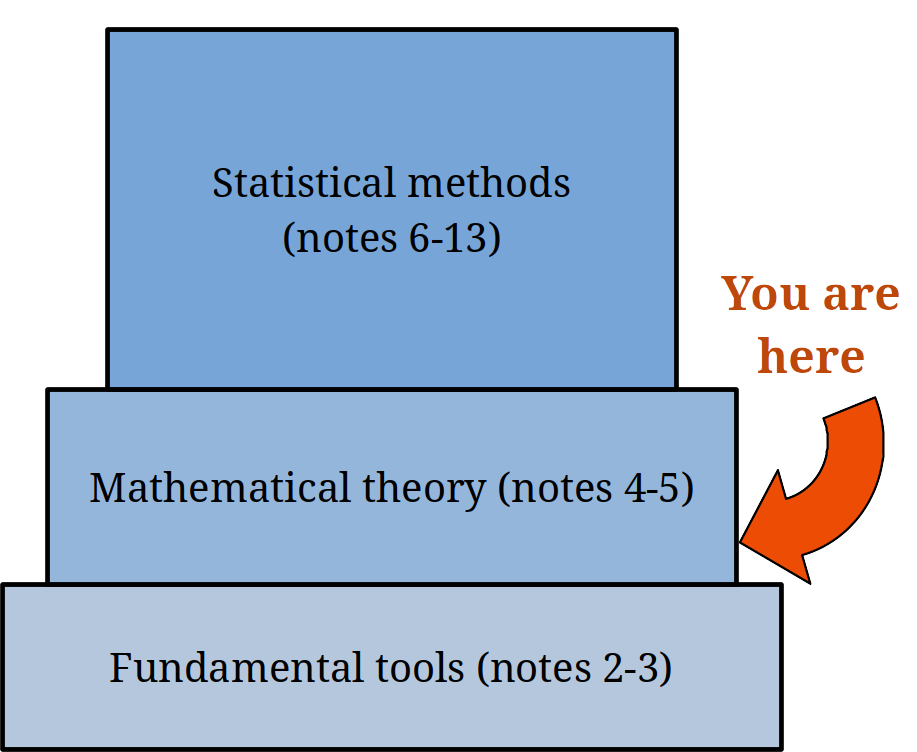
4.1 Random variable basics
We’ve seen how to represent and calculate the probability of different events happening when we sample from a population. But often, instead of qualitative events, we’re interested in particular numeric values of the population. In the hybrid vehicles example, each item has an associated number that refers to its MPG.
A random variable (RV) represents the distribution of numeric values in a population.
We use capital letters to refer to random variables, e.g. \(X =\) a vehicle’s MPG. The value of a RV is random, because different objects in the population have different values. We can think of a RV as a “plan” to sample an item from the population. We don’t know what the value will be until we actually measure it.
When an item from the population is actually measured, the random variable will realize a constant value.
If we choose a car at random and it turns out to have 46 MPG, then \(X = 46\). When the realization is unkown, it is denoted by a lowercase letter of the same type. \[X = \text{ random variable},\quad\quad x = \text{ constant realization}\] Similar to how we talk about the probability of events, we’re interested in the probability that \(X\) takes on a certain value \(x\). For the vehicle example, \(\mathbb{P}(X = 46)\) is the probability of drawing a vehicle with MPG 46, which is the same as the proportion of vehicles with MPG 46.
In general, the probability function on \(X\) assigns a probability to each possible value of \(X\). We write this as \(P(X = x)\).
There are two types of RVs, discrete and continuous. This is analogous to the difference between discrete and continuous data.
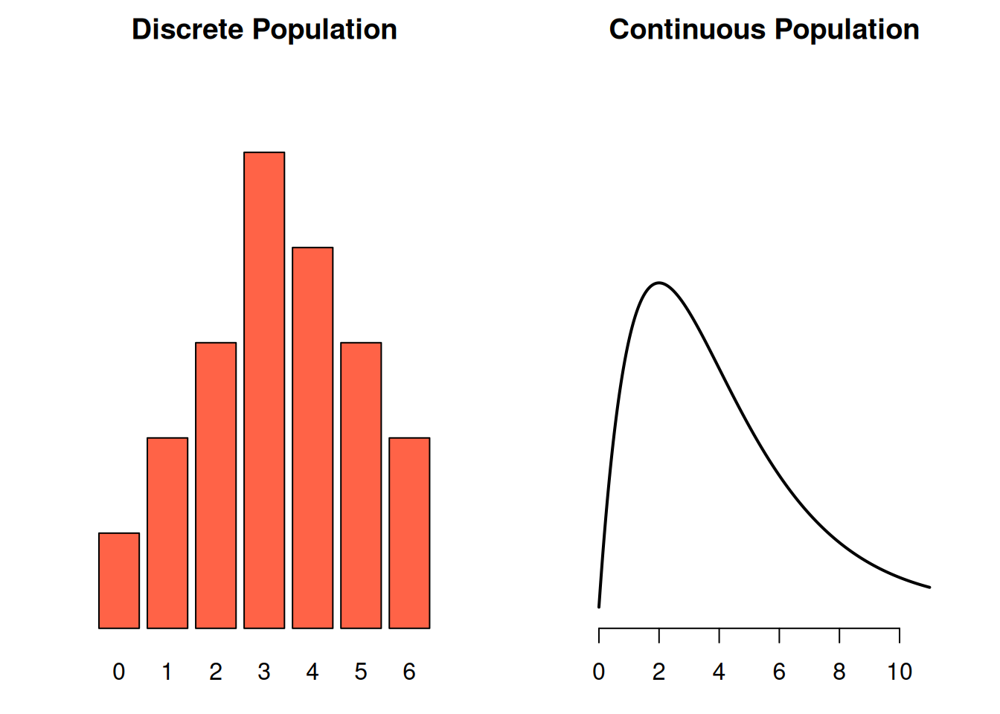
A discrete random variable can only take on specific values.
- Result of a die roll
- Number of people in a household
A continuous random variable can take on any value in a range, and it’s impossible for us to “list out” the possible values.
- Person’s height
- Time to walk to class
Think of a RV as representing the spread of all possible values in a population. If we sample from a discrete RV/population, we get discrete data. If we sample from a continuous RV/population, we get continuous data.
Because discrete RVs take on specific values, we can enumerate those values and probabilities in a table. For example, the Apgar score for newborns is on a scale from 0-10 based on condition immediately after birth.
| \(x\) | 0 | 1 | 2 | 3 | 4 | 5 |
|---|---|---|---|---|---|---|
| \(\mathbb{P}(X = x)\) | 0.001 | 0.006 | 0.007 | 0.008 | 0.012 | 0.020 |
| \(x\) | 6 | 7 | 8 | 9 | 10 |
|---|---|---|---|---|---|
| \(\mathbb{P}(X = x)\) | 0.038 | 0.099 | 0.319 | 0.437 | 0.053 |
The row labeled \(P(X = x)\) shows the probability function for \(X\).
For a discrete RV, the probability function has a specific name: the probability mass function (pmf).
We see that if we sample a newborn at random from the population, there is a 43.7% chance that it has an Apgar score of 9. Equivalently, the proportion of newbors with Apgar score 9 is 0.437.
It’s important to point out that all of the probabilities in this table must add up to 1. In other words, every single item in this population must have a score from 0 to 10.
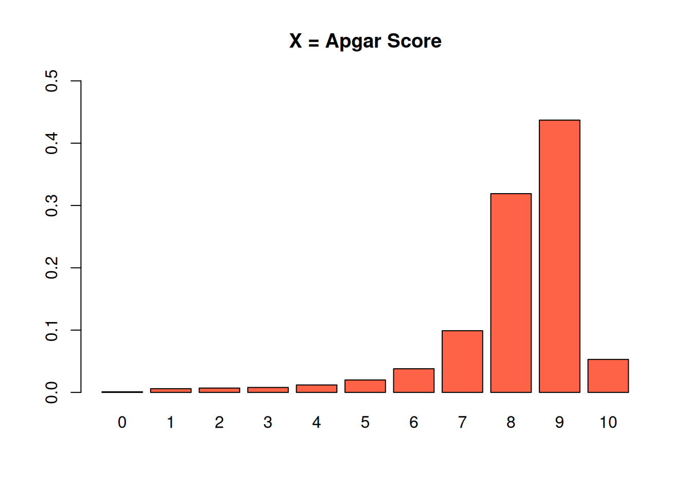
Sometimes, a “population” represents the possible results of some kind of random experiment. If our experiment is to roll a fair six-sided die, then we can think of this roll as being a random sample from a population with values 1, 2, 3, 4, 5, and 6.
Another common type of experiment is binary, which means there are only two possible outcomes. We might be interested in repeating a binary experiment several times and seeing how many times we get the two different outcomes. For example, flip a coin 10 times and count how many times we get heads.
Let’s look at a more “real” example. Offspring of a dihybrid cross of peas can have any of four phenotypes. \(\frac{9}{16}\) offspring have the round-yellow (RY) type. We breed the peas 3 times, and count the number of RY offspring out of 3.
We can see anywhere from 0 to 3 RY plants, so the population represeting this experiment has four values: 0, 1, 2, or 3. Let’s make a table to keep track of these different outcomes.
| Result | \(x\) | \(\mathbb{P}(X = x)\) |
|---|---|---|
| FFF | 0 | |
| 1 | ||
| SSF, SFS, FSS | 2 | |
| 3 |
So, the random variable \(X\) represents our random experiment, which is the number of RY plants we get out of three breedings. When working with a binary experiment, it is conventional to define one outcome as a “success” and one as a “failure”. In our case, a success is when we get an RY plant.
Let’s think about how to find these probabilities. What is \(P(X = 0)\)? This means that we bred the plant three times, but had no RY offspring. We had to get three failures in a row, which is represented by the result “FFF”. If we assume the offspring are independent, then the probability of this happening is the \(\frac{7}{16}\) probability of failure, three times in a row. \[P(X = 0) \;=\; P(FFF) \;=\; \frac{7}{16}\cdot \frac{7}{16}\cdot \frac{7}{16} = 0.084\]
What about \(P(X = 2)\)? That means that we bred the plant three times, and 2 out of 3 offspring were RY. We have to be a bit careful here, because there are multiple ways that this can happen. We might get two RY plants, then one non-RY plant (SSF). Or we might get an RY plant, a non-RY plant, then another RY plant (SFS). The last way is if we get FSS.
We need to take all three of these possibilities into account when finding the probability, because they all lead to \(X\) being equal to 2. The individual probabilities are found by multiplying the probabilities for two successes and one failure. \[P(SSF) \;=\; P(SFS) \;=\; P(FSS) \;=\; \frac{9}{16}\cdot \frac{9}{16}\cdot \frac{7}{16}\]
We have multiply this probability by three, to account for the different ways this can happen. So, \[P(X = 2) \;=\; P(SSF) + P(SFS) + P(FSS) \;=\; 3\cdot \frac{9}{16}\cdot \frac{9}{16}\cdot \frac{7}{16} \;=\; 0.415.\]
Fill out the rest of the table by finding the results and probabilities for \(X = 1\) and \(X = 3\).
| Result | \(x\) | \(\mathbb{P}(X = x)\) |
|---|---|---|
| FFF | 0 | |
| 1 | ||
| SSF, SFS, FSS | 2 | |
| 3 |
\(X = 1\) means that one plant out of three breedings had the RY type. There are three ways this can happen: SFF, FSF, FFS. Each one of those individual results has probability \[\frac{9}{16}\cdot \frac{7}{16}\cdot \frac{7}{16}.\] So, the overall probability \(P(X = 1)\) is \[P(SFF) + P(FSF) + P(FFS) \;=\; 3\cdot \frac{9}{16}\cdot \frac{7}{16}\cdot \frac{7}{16} \;=\; 0.323.\]
\(X = 3\) means that every single one of the three offspring were RY There’s only one way this can happen: we get three succeses in a row, SSS. \[P(X = 3) \;=\; P(SSS) \;=\; \frac{9}{16}\cdot \frac{9}{16}\cdot \frac{9}{16} \;=\; 0.178\]
| Result | \(x\) | \(\mathbb{P}(X = x)\) |
|---|---|---|
| FFF | 0 | 0.084 |
| SFF, FSF, FFS | 1 | 0.323 |
| SSF, SFS, FSS | 2 | 0.415 |
| SSS | 3 | 0.178 |
We can check that we’ve done this correctly by checking if the probabilities add to 1. \(0.084 + 0.323 + 0.415 + 0.178 = 1\).

Consider the event that “at least one of the offspring will be RY.” How can we write this qualitative event as a numerical statement about \(X\)? What is the probability of this happening?
“At least one” means we see either 1, 2, or 3 RY offspring (anything except 0). We can write this as \(P(X \ge 1)\). It’s also equivalent to say \(P(X \neq 0)\) or \(P(X > 0)\). We can find this probability directly: \[P(X \ge 1) \;=\; P(1) + P(2) + P(3) \;=\; 0.323 + 0.415 + 0.178 \;=\; 0.916\] Or with the complement rule: \[P(X \neq 0) \;=\; 1 - P(0) \;=\; 1 - 0.084 \;=\; 0.916.\]
4.2 Expectation and variance
We’ve learned about the concept of using the mean, or average, to describe the center of a set of observed data. We can apply this same concept to a random variable. Since RVs represent populations, the mean of a RV is interpreted as the true population mean. This is a parameter.
How do we take an average when we have a table of values and probabilities, rather than a list of data points? Consider a population where 90% of the values are 0, and 10% of the values are 1.
| \(x\) | \(\mathbb{P}(X = x)\) |
|---|---|
| 0 | 0.9 |
| 1 | 0.1 |
If we draw a random item from this population, there’s a 90% chance of it having a value of 0. We need to take an average of the population values, which are 0 and 1.
Intuitively, it doesn’t make sense to say the population mean is the simple average \((1 + 0)/2 = 0.5\). There are many more 0’s than 1’s in the population, and 0.5 seems inappropriate because it is exactly halfway between 0 and 1. We need to take the probabilities into account.
Instead of taking a simple average, we calculate the mean of a RV by taking a weighted average of its values. The weights are the associated probabilities. By doing this, we can take into account the frequencies that each value appears in the population. In the above example, the mean is \[(0)0.9 + (1)0.1 \;=\; 0.1 \; = \; E(X)\]
The mean of 0.1 is much closer to 0 than 1, which corresponds to the fact that there are way more 0’s than 1’s in our population.
Another name for the mean of a RV (which is the mean of a population) is expected value or expectation. The expected value is trying to describe the “typical” draw from the population. It’s still perfectly fine to use the terms “mean” or “average” in this context, but you should specify that you are talking about the mean of a RV rather than the mean of a sample.
In general, the expected value of a discrete RV is a weighted average of the possible values, where the weights are the probabilities. \[\mathbb{E}(X) \;=\; \mu \;=\; \sum_x P(X = x) \cdot x\]
Here, we’re using \(x\) to represent enumerating over all of the possible values of \(X\). We can also use the Greek letter \(\mu\) (mu, pronounced “mew”).
\[E(X) \;=\; \mu \;=\; ``\text{RV mean"} \;=\; ``\text{Population mean"}\]
Suppose the random variable \(X_1\) is the value of a roll of a fair six-sided die. The possible values of \(X_1\) are 1, 2, 3, 4, 5, 6, and each has equal probability. So, \[E(X_1) \;=\; (1)\frac{1}{6} + (2)\frac{1}{6} + (3)\frac{1}{6} + (4)\frac{1}{6} + (5)\frac{1}{6} + (6)\frac{1}{6} \;=\; 3.5\] In the case where all of the population values are equally likely, calculating the expected value is equivalent to calculating a simple average. But this usually is not the case.
Suppose \(X_2\) is the value of the roll of an unfair die, where \(P(1) = \frac{1}{12}\) and \(P(6) = \frac{3}{12}\). Then \[E(X_2) \;=\; (1)\frac{1}{12} + (2)\frac{1}{6} + (3)\frac{1}{6} + (4)\frac{1}{6} + (5)\frac{1}{6} + (6)\frac{3}{12} \;=\; 3.917\] We see that \(X_2\) has a higher expected value than \(X_1\). If you repeatedly rolled die \(X_1\) and your friend repeatedly rolled die \(X_2\), then you might notice that your friend tends to get higher rolls.
So what exactly is the connection between an expected value/population mean and the sample mean?
\[\text{Sample mean} \;=\; \bar{x} \;=\; \frac{1}{n}\sum_{i=1}^n x_i\]
\(\bar{x}\) is the observed mean of some measured data. It is a statistic.
The expected value \(E(X) = \mu\) is the mean of the entire population. It is a parameter. If we took a sample from a population with mean \(\mu\), then the sample mean \(\bar{x}\) would probably look similar to \(\mu\).
If we were somehow able to take a sample of infinite \(x_i\)’s and take their sample mean, \(\bar{x}\) would be equal to \(\mu\).
We can also apply the concept of variance to describe the spread of a random variable. Since RVs represent populations, the variance of a RV is interpreted as the true population variance. This is a parameter.
Recall that variance is a measure of how close values are to their mean. Specifically, it is the average squared distance from the values to the mean. For RVs, the mean is given by expected value. The squared distance from a specific RV value \(x\) to the mean of the RV is \[[x - E(X)]^2.\] Now, we need to take an average of these values to get the variance of the random variable. Just like before, we have to take a weighted average based on the probabilities \(P(X = x)\).
The variance of a discrete RV, interpreted as the population variance, is \[V(X) \;=\; \sigma^2 \;=\; \sum_x P(X = x) \cdot [x-E(X)]^2\]
For each \(x\), we find the squared distance between \(x\) and \(E(X)\), then multiply it by the probability of \(x\). We do this for all values in the RV, then add them up. We use the Greek letter \(\sigma^2\) (sigma squared) to represent variance. \[V(X) \;=\; \sigma^2 \;=\; ``\text{RV variance"} \;=\; ``\text{Population variance"}\]
For example, recall the variable \(X_1\) which describes the roll of a fair die. The mean of \(X_1\) is \(E(X_1) = 3.5\), so the variance is \[\begin{align*} V(X) &= \frac{1}{6}(1 - 3.5)^2 + \frac{1}{6}(2 - 3.5)^2 + \frac{1}{6}(3 - 3.5)^2 \\ &+ \frac{1}{6}(4 - 3.5)^2 + \frac{1}{6}(5 - 3.5)^2 + \frac{1}{6}(6 - 3.5)^2 \end{align*}\] which is 2.917. We can interpret this as the uncertainty in the value we get when rolling a die.
Previously, we used both standard deviation and variance to describe spread. Standard deviation is the square root of the variance. We can say the exact same thing for a RV.
The population standard deviation is given by \(\sigma\), where \[\sigma \;=\; \sqrt{\sigma^2} \;=\; \sqrt{V(X)}\]
Variance is in squared units compared to the original population, and standard deviation is in the original units of the population. But they provide the same information about spread.
We can also look at the connection between a RV’s variance and the sample variance. For a set of data, \[\text{Sample variance} \;=\; s^2 \;=\; \frac{1}{n-1}\sum_{i=1}^n (x_i - \bar{x})^2\] \(s^2\) is the observed variance, a statistic.
The variance of a RV, \(V(X) = \sigma^2\) is the variance of the entire population, so it is a . If we took a sample from a population with variance \(\sigma^2\), then the sample variance \(s^2\) would probably look similar to \(\sigma^2\).
If we were somehow able to take a sample of infinite \(x_i\)’s and take their sample variance, \(s^2\) would be equal to \(\sigma^2\).
Conventionally, we use Latin letters to refer to statistics, and Greek letters to refer to parameters.
| Measure | Statistic | Parameter |
|---|---|---|
| Mean | \(\bar{x}\) | \(\mu\) |
| Variance | \(s^2\) | \(\sigma^2\) |
| St. Dev. | \(s\) | \(\sigma\) |
Let’s go back to the pea plant offspring example.
| \(x\) | 0 | 1 | 2 | 3 |
|---|---|---|---|---|
| \(P(X = x)\) | 0.084 | 0.323 | 0.415 | 0.178 |
Find the mean (expected value), variance, and standard deviation of \(X\), the number of RY plants in 3 dihybrid offspring.
We need to weight each possible value 0-3 by its probability, then add them up. From the formula above, the expected value is \[E(X) \;=\; \sum_x P(X = x) \cdot x \;=\; 0.084(0) + 0.323(1) + 0.415(2) + 0.178(3) \;=\; 1.687\] The variance is a weighted average of the squared distance from the RV to the mean 1.687. This is \[\begin{align*} V(X) &= 0.084(0 - 1.687)^2 + 0.323(1 - 1.687)^2 + \\ &+ 0.415(2 - 1.687)^2 + 0.178(3 - 1.687)^2 \\ &= 0.739 \end{align*}\] The standard deviation is the square root of the variance, \(\sqrt{0.739} = 0.86.\)
4.3 Binomial random variables
The RV \(X\) in the genes example represents a count of how many times we get an RY plant in 3 breedings. This is just one specific example of a more general structure of experiment. There are a lot of binary experiments with only two results that we might be interested in. For example, is a patient positive or negative for a disease? Did the value of a stock rise or fall?
\(X\) is called a binomial random variable. This is a specific type of discrete RV that counts the number of times a successful outcome occurs when we repeat a binary experiment.
We say that \(X\) has a binomial distribution. The word “distribution” is used to refer to how probabilities are distributed across the different values in a population.
\(X\) is one particular example of a binomial, but all binomial RVs share specific properties. Let’s see how to identify and define a binomial RV.
The three trials in the plant breeding experiment have specific properties:
- They only yield one of two outcomes (success, or failure). We defined a “success” as seeing an RY type plant.
- They all have the same probability of success. In the plant example, \(\pi = 9/16\). \[P(\text{success}) = \pi,\quad P(\text{failure}) = 1 - \pi\]
- They are independent.
To define a binomial random variable, we need to binary, identical, independent trials. Our binomial RV count the number of successes in a fixed number (\(n\)) of those trials.
To make statements about a binomial RV, there are two values that we need to define. \(\pi\), the probability of success, and \(n\), the number of trials or experimental runs we observe.
Why are following situations not binomial RVs?
- We breed plants until we get an RY, then stop.
- We counted up how many times we get each of the four phenotypes, not just RY.
The first example is not binomial because there is not a fixed number of trials \(n\). The second example is not binomial because there are four possible outcomes, but we need there to be only two.
If \(X\) is binomial, we write \(X \sim Binom(\# trials,\; \textit{success-prob})\). The plant RV is \(Binom(3, \frac{9}{16})\) More generally, \(X \sim Binom(n, \pi)\).
The \(\sim\) symbol means the random variable follows a specific type of distribution.
The pmf (probability mass function) of \(X\) has a special formula. In the genes example, we found \[P(X = 2) \;=\; 3(9/16)^2(7/16)^1.\] We multiply \(\frac{9}{16}\) twice because we have two succesess, and \(\frac{7}{16}\) once because we have one failure. There are 3 ways this can happen (SSF, SFS, FSS) so we multiply by 3 as well. The general formula is: \[P(X = x) \;=\; \binom{n}{x}\pi^x(1-\pi)^{n-x}\] \(x\) is the number of successes, and \(n-x\) is the number of failures. The symbol \(\binom{n}{x}\) counts the number of ways you can have \(x\) successes out of \(n\) total tries.
The shape of the binomial pmf depends on \(n\), the number of trails, and \(\pi\), the probability of success for any individual trial.
This binomial has \(n = 10\), so it covers all of the numbers from 0-10. The individual success probability is 0.5, an exact 50/50 chance to succeed or fail, so the “peak” of the graph is right in the middle.
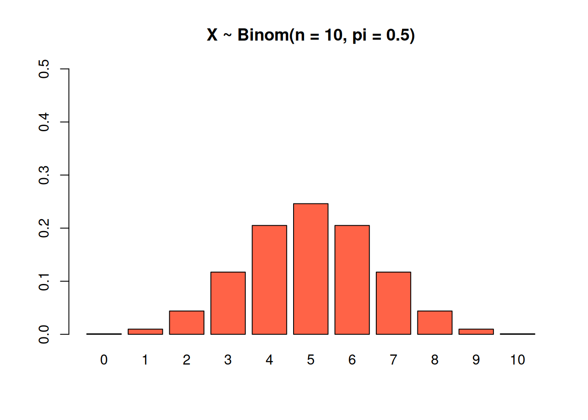
This binomial also has \(n = 10\), but a bigger success probability of \(\pi = 0.7\). The peak is shifted to the right.
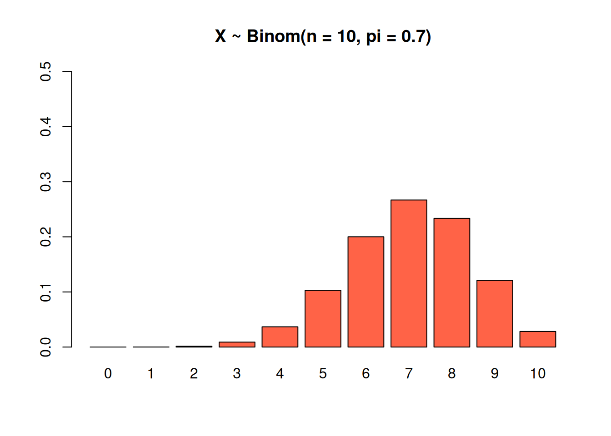
This binomial has \(n = 10\) and a very small success probability of \(\pi = 0.1\). Notice how the bars for the higher numbers are extremely small. If the success rate for each trial is 10%, it’s incredibly unlikely that we hit that 10% success rate 10 times in a row.

Finally, this binomial has \(n = 20\) and \(\pi = 0.5\). We’re most likely to see a mix of successees and failures, which is why most of the graph is concentrated around the middle.

We can use the R function dbinom as a shortcut for calculating binomial probabilities. Write dbinom(x, n, pi) as a shortcut for
\[P(X = x) \;=\; \binom{n}{x}\pi^x(1-\pi)^{n-x}.\]
For example, we can re-calculate \(P(X = 2)\) in the plant genes example.
## [1] 0.4152832Let \(Y \sim Binom(5, 0.25)\). Use R dbinom for the following questions.
- What is \(P(Y = 1)\) and what does the value mean?
- What is \(P(Y \ge 1)\), and what does the value mean?
According to R, P(Y = 1) is 0.396. This is the probability that we see exactly one success out of five total trials.
## [1] 0.3955078One way to find \(P(Y \ge 1)\) is to use the complement rule. \(Y \ge 1\) means we see at least one success, and the only way this doesn’t happen is if we get no successes, where \(Y = 0\). The probability is \(P(Y \ge 1) = 1 - P(Y = 0) = 0.763.\)
## [1] 0.7626953
We can also add up the probabilities for 1, 2, 3, 4, and 5 with a bit of R cleverness. Below, dbinom(1:5, 5, 0.25) calculates all of the individual binomial probabilities from 1 to 5 successes. Then the sum function adds them together, giving us our final value.
## [1] 0.3955078125 0.2636718750 0.0878906250 0.0146484375 0.0009765625## [1] 0.7626953One nice thing about working with binomial RVs is that we have shortcuts for calculating the mean and variance in terms of \(n\) and \(\pi\). So if we know those values, we don’t have to go to the trouble of using the general expected value or variance formula. The expected value of a \(Binom(n, \pi)\) RV is \[\mu \;=\; n\pi\] the product of # trials and success probability. The average number of successes goes up when we do more trials, and it goes up when we have a higher individual success rate. The variance of a \(Binom(n, \pi)\) RV is \[\sigma^2 \;=\; n\pi(1-\pi).\] The uncertainty in the number of successes goes up when \(n\) goes up. The uncertainty is biggest when \(\pi\) and \(1-\pi\) are both equal to 0.5. But if \(\pi\) is close to 0 or close to 1, we’re less uncertain about whether we succeed or fail.
Let’s re-calculate the mean and variance of \(X \sim Binom(3, \frac{9}{16})\) in the genes example, using these new shortcuts. \[\mu \;=\; n\pi \;=\; 3\cdot \frac{9}{16} \;=\; 1.6875\] \[\sigma^2 \;=\; n\pi(1-\pi) \;=\; 3\cdot\frac{9}{16}\cdot \frac{7}{16} \;=\; 0.738\] which is what we got before. The only discrepancy is because we did a bunch of rounding the first time.
4.4 Rules of expectation and variance
Let’s define another RV in our genes experiment. Suppose \(P\) is the number of RY pea pods we harvest from the offspring after breeding the plants 3 times. If a pea plant produces 11 pods, and \(X\) is the number of RY plants, then \(P = 11X\).
If the mean of \(X\) is 1.6875, what should the mean of \(P\) be? Intuitively, since there are 11 pea pods per plant, and 1.687 is the average number of RY plants, the average number of RY pods should be \(11\times 1.687\).
We can think about the mean, variance and other properties of \(P\) in terms of \(X\). We have a number of rules for calculating the expectation and variance of a random variable using information we know about a different RV. For example, using \(E(X)\) from before to find \(E(P)\).
In general, let \(X\) and \(Y\) be any RVs, and let \(c\) be a constant. We will discuss the following rules of expectation:
- Expectation of a constant, \(E(c)\)
- Expectation of a shifted RV, \(E(X + c)\)
- Expectation of a scaled RV, \(E(cX)\)
- Expectation of a sum, \(E(X + Y)\)
What do you think each of these expressions would be equal to?
- \(E(c) = c\)
- \(E(X + c) = E(X) + c\)
- \(E(cX) = cE(X)\)
- \(E(X + Y) = E(X) + E(Y)\)
- The expected value of a constant is just itself.
- When you shift a RV by a constant amount, the center also shifts by that amount.
- When a RV gets scaled, the center is scaled by the same amount.
- Expectation is additive.
The final property is very powerful - \(X\) and \(Y\) need to be independent for it to be true.
We will also discuss the following rules of variance:
- Variance of a constant, \(V(c)\)
- Variance of a shifted RV, \(V(X + c)\)
- Variance of a scaled RV, \(V(cX)\)
- Variance of a sum, \(V(X + Y)\), where \(X\) and \(Y\) are independent.
What do you think each of these expressions would be equal to?
- \(V(c) = 0\)
- \(V(X + c) = V(X)\)
- \(V(cX) = c^2V(X)\)
- \(V(X + Y) = V(X) + V(Y)\) for independent \(X\) and \(Y\)
- A constant does not vary, and we’re always certain of its value.
- If we shift \(X\) to a different location on the number line, its spread does not change.
- If we scale a RV, variance is scaled by that amount squared. This is because variance is in squared units compared to the original RV.
- The addition rule can only be used if \(X\) and \(Y\) are independent. Variance is not additive in general!
A small car ferry runs a trip every hour. The number of vehicles per trip \(T\) is random, depending on the number of customers. The average number of vehicles per trip is \(E(T) = 3.87\). The variance in the number of vehicles per trip is \(V(T) = 1.286^2\).
Customers pay 5 units of money per vehicle. So, the amount of money collected by the company on a randomly selected trip is \(M = 5T\). The fixed cost for the company is 20, so the profit they make on a trip is \(P = 5T - 20\).
Find the mean and variance of both \(M\) and \(P\): \(\mathbb{E}(M), \mathbb{V}(M), \mathbb{E}(P), \mathbb{V}(P)\).
Since \(M = 5T\), we need to make use of the rules for when we scale a RV. \[\begin{align} E(M) &= E(5T) \\ &= 5E(T) \\ &= 5(3.87) \\ &= 19.35 \end{align}\] Similarly, \[\begin{align} V(M) &= V(5T) \\ &= 5^2V(T) \\ &= 5^2 1.286^2 \\ &= (5\times 1.286)^2 \end{align}\] The variance of \(M\) is \((5\times 1.286)^2\) so the standard deviation of \(M\) is just \((5\times 1.286)\).
Since \(P = 5T - 20\), we need to make use of the rules for when we scale a RV and the rules for when we shift a RV by a fixed amount. \[\begin{align} E(P) &= E(5T - 20) \\ &= 5E(T) - E(20) \\ &= 5(3.87) - 20 \\ &= -0.65 \end{align}\] Similarly, \[\begin{align} V(P) &= V(5T - 20) \\ &= 5^2V(T) + 0 \\ &= 5^2 1.286^2 \\ &= (5\times 1.286)^2 \end{align}\] We see that the variance of \(P\) is the same as the variance of \(M\). The fixed cost of 20 doesn’t change the variability in the profit.
4.5 Normal random variables
The most important type of RV in statistics is a normal RV, or normal distribution. Before we discuss this, we need to learn about continuous probability.
Recall that RVs can be either discrete or continuous, depending on whether or not the variable can only take on specific values. A continuous random variable can take on any value in a specific range.
The probability function of a continuous RV is called a probability density function, or pdf.
This works differently from a discrete probability function (pmf), so it has a different name.
A continuous RV can take on any value in a range, so we can’t list the values in a table. We draw the pdf as a smooth curve.
It takes 10 to 15 minutes to drive to campus, depending on traffic. The curve of the pdf represents all possible driving times and their relative probabilities.

Based on the height of the curve, a longer driving time is a bit more likely, and a really short driving time is a bit less likely.
A very important distinction is that for continuous RVs, probability is not given by the height of the curve. It’s given by the area under the curve. The area under the entire pdf is 1, since the probability that the time is between 10 and 15 minutes is 1 (guaranteed).
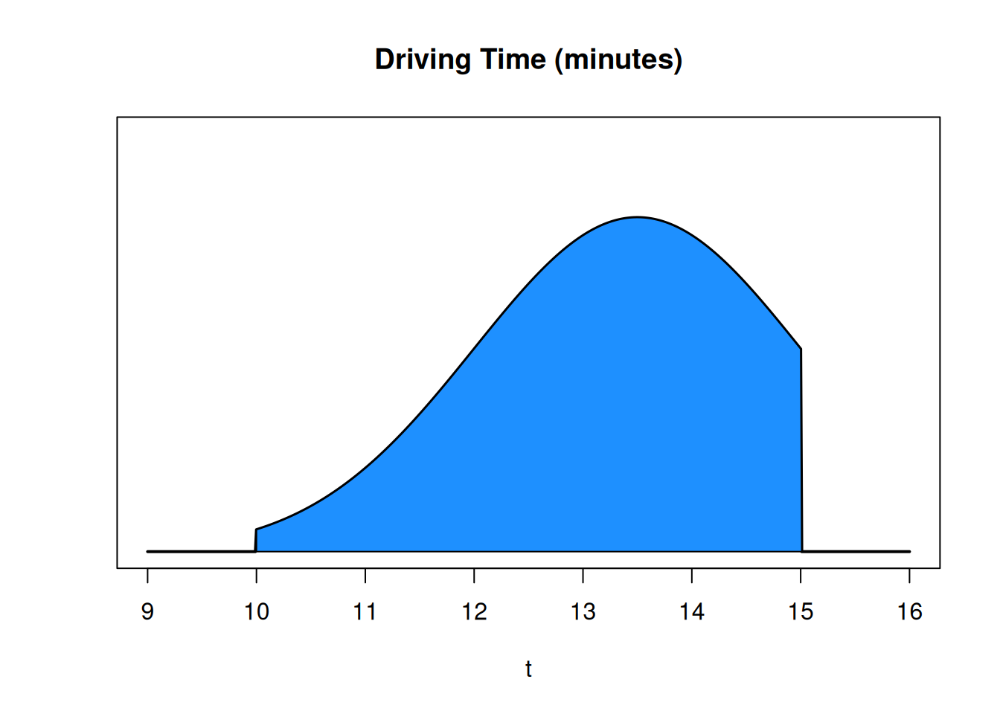
This section of area is \(P(12 \le \text{ driving time } \le 14)\). Since the entire area is 1, this area will be a number between 0 and 1.

The probability of an single value (like \(P(\text{driving time} = 12)\) is 0. Since we’re working with a continuous process, the probability of the driving time being exactly 12 minutes down to the pico-second is infinitely improbable. It only makes sense to think about the probability of a range.

The concepts of expectation and variance can also be applied to continuous random variables. The calculation is different (we won’t go over it since it requires calculus). But the interpretation is the same. Expectation is the typical value in the population, and variance is the spread of the population.
A normal random variable is a type of continuous RV whose distribution is shaped like a bell curve.

There are many real-world processes that have this sort of shape. For things like height, weight, test scores, you would expect most individuals to be somehwere in the middle. A few individuals are particularly high or particularly low.
Data sampled from a normal population will appear normal on a histogram.
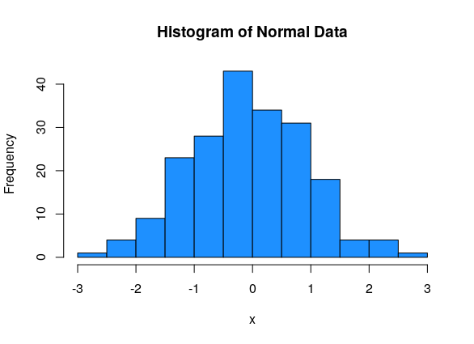
Suppose the height of all US males has a normal distribution centered at 70 inches. The normal pdf curve will be centered at 70.

What is the probability that a randomly chosen US male has height under 72 inches? This is the area under the bell curve, to the left of \(x = 72\).
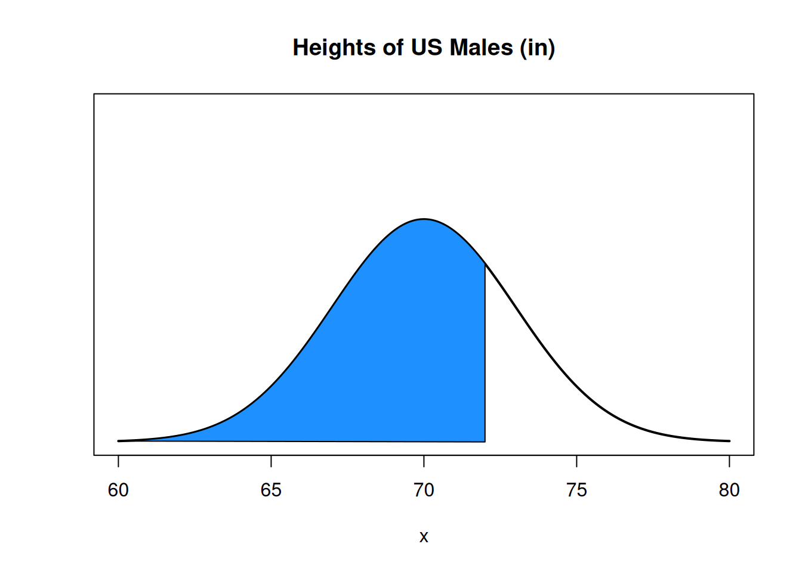
This is the same as the proportion of US males who are less than 72 inches tall.
To define a normal RV, we specify mean and variance, \(\mu\) and \(\sigma^2\). The formula for drawing the normal pdf is \[\frac{1}{\sqrt{2\pi\sigma^2}}e^{-\frac{1}{2}\big(\frac{x-\mu}{\sigma}\big)^2}.\] We won’t be working directly with this. The exponential equation makes a smooth bell curve shape, and the fraction normalizes it so that the area under the curve is 1.
Every normal RV is defined from \(-\infty\) to \(\infty\). The tails go on forever. To specify that we’re working with a normal RV, we write \(X \sim N(mean, variance)\) which is \(X \sim N(\mu, \sigma^2)\).
The bell-curve of the normal pdf is centered at \(\mu\), and its width is given by \(\sigma^2\). This is a normal RV that is centered at 0 and has variance 1:

This normal RV has a lower center and more spread.

This normal RV has a higher center and less spread.
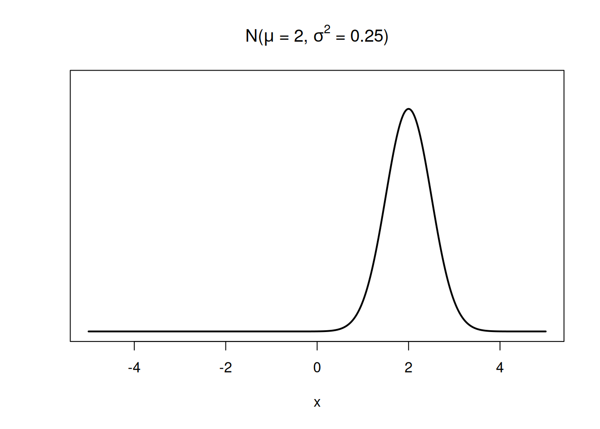
We can also define the spread of a normal RV in terms of its standard deviation, which is \(\sigma = \sqrt{\sigma^2}\). Interestingly, all normal populations have a specific proportion of items within 1, 2, and 3 standard deviations (\(\sigma\)) from the mean.
Essentially, the values of a normal Rv are tightly concentrated around the mean, and this concentration is determined by \(\sigma\).
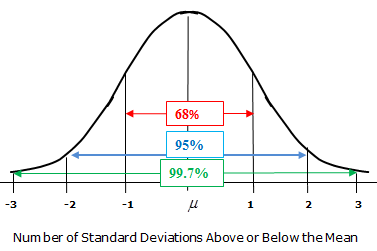
This is the empirical rule. For a normal population, 68% of the population is within 1 standard deviation, 95% is within 2 standard deviations, and 99.7% is within 3 standard deviations. Mathematically, if \(X \sim N(\mu, \sigma^2)\), \[P(\mu-\sigma < X < \mu + \sigma) = 0.68\] \[P(\mu-2\sigma < X < \mu + 2\sigma) = 0.95\] \[P(\mu-3\sigma < X < \mu + 3\sigma) = 0.997\]
The tails on the normal bell curve go to infinity, but the area outside of 3 standard deviations is extremely tiny.
A specific type of normal RV is a standard normal. This is used as a “reference point” for discussions of normal probabilities.
A standard normal is a normal RV with mean 0 and variance 1 (and standard deviation 1). Use \(Z\) to refer to a standard normal: \[Z \sim N(0, 1^2)\]
We can find probabilities about any normal RV from the standard normal distribution using a process called standardization.
Let \(X \sim N(\mu, \sigma^2)\) be any normal variable. It can be shown that \[Z = \frac{X - \mu}{\sigma}\] is \(N(0, 1^2)\). This transformation (subtract mean, divide by sd) is called standardization.
This can be done to any normal RV. Any normal RV can be transformed into a standard normal RV, and a standard normal RV can be transformed back into any normal RV.
Thus, when we have a probability statement about some arbitrary normal RV, we can “translate” it into a statement about a standard normal RV.
Let’s go back to the height example. Suppose the height of US males, \(X\), is normal with mean 70 inches and standard deviation 3. \(X \sim N(70, 3^2)\). (I prefer to write the variance as \(3^2\) instead of \(9\) for clarity).
What is \(P(X \le 72)\)? We can find this by standardizing both sides. \[\begin{align} P(X \le 72) &= P(X - 70 \le 72 - 70) \quad \quad \text{first, subtract mean from both sides} \\ &= P\Big(\frac{X - 70}{3} \le \frac{72-70}{3}\Big) \quad \quad \text{then, divide both sides by sd} \\ &= P\Big(Z \le \frac{2}{3}\Big) \quad \quad \text{the left side is a standard normal RV} \end{align}\]
So, \(P(X \le 72) = P(Z \le \frac{2}{3})\). 72 on the height distribution corresponds to \(\frac{2}{3}\) on the standard normal distribution. We call \(z = \frac{2}{3}\) the z-score.
A z-score is a value on the standard normal \(N(0, 1^2)\) bell curve.
Since the standard normal is centered at 0 and has sd 1, a z-score tells us how many standard deviations we are away from the mean. The point 72 is \(\frac{2}{3}\) of a standard deviation above the mean value of 70.

In general, for \(X \sim N(\mu, \sigma^2)\), we can write \[\mathbb{P}(X \le x) \;=\; \mathbb{P}\Big(Z \le \frac{x - \mu}{\sigma}\Big)\]
How do we actually calculate a normal probability? It’s impossible to do this “by hand”, so we need to make use of external tools. Historically, probabilities were found with a standard normal table, which lists probabilities of a \(N(0, 1^2)\) distributionn.
We’re going to use the R function pnorm (which stands for “probability normal”). R lets us find a probability either in terms of the standard normal, or in terms of the original normal distribution. By default, pnorm gives the area below a point on the standard normal curve.
## [1] 0.7475075There is 0.748 area to the left of \(\frac{2}{3}\) on the standard normal curve (this corresponds to the red area above). Alternatively, if we take a random sample from the standard normal, there is a 74.8% chance that the value will end up being less than \(\frac{2}{3}\).
We can also specify the mean and standard deviation of the specific normal curve that we’re working with. Note that pnorm always wants the sd, not the variance.
## [1] 0.7475075We get the exact same probability as before. So we can find this probability either directly, or through standardization. According to our model, 74.8% of US males are less than 72 inches tall.
You may have noticed that I’m being a bit sloppy with whether I use “less than” or “less than or equal” for this problem. When we’re working with continuous probability, it actually doesn’t really matter. The probability of being exactly 72 is 0:

Since \(P(X = 72) = 0\), \[P(X \le 72) \;=\; P(X < 72) + P(X = 72) \;=\; P(X < 72).\]
The weights of packages from a production line is normal with mean 16.1 oz and standard deviation 0.3 oz. \(W \sim N(16.1, 0.3^2)\).
- Sketch the pdf (the normal bell curve) of \(W\) and draw where a 16 ounce package falls on that distribution.
The bell curve must be centered at \(\mu = 16.1\), since that’s the mean. We want to scale the x axis so that most of the area is within 3 standard deviations (frmo 15.2 to 17). The value 16 is very slightly below the mean, since it’s not even a full standard deviation away. You should try to do this on paper, but I’m doing this on a computer so I’ll make R do the work for me. :D

- What is the probability that a randomly chosen package weighs less than 16 ounces?
Using standardization, \[P(W \le 16) \;=\; P\Big(\frac{W - 16}{0.3} \le \frac{16 - 16.1}{0.3}\Big) \;=\; P\Big(Z \le -\frac{1}{3}\Big).\] We can find this probability in R with the standardized score or with the original population distribution of \(W\). About 36.9% of the packages weigh less than 16.1 ounces.
## [1] 0.3694413## [1] 0.3694413- What is the probability that a randomly chosen package has a weight between 15.5 and 16.5 ounces?
We know how to use pnorm to find the area to the left of a certain value. But we need to find the area between two values. To do this, we need to find the area below 16.5, then subtract the area below 15.5. That will get us exactly the area between those two values.
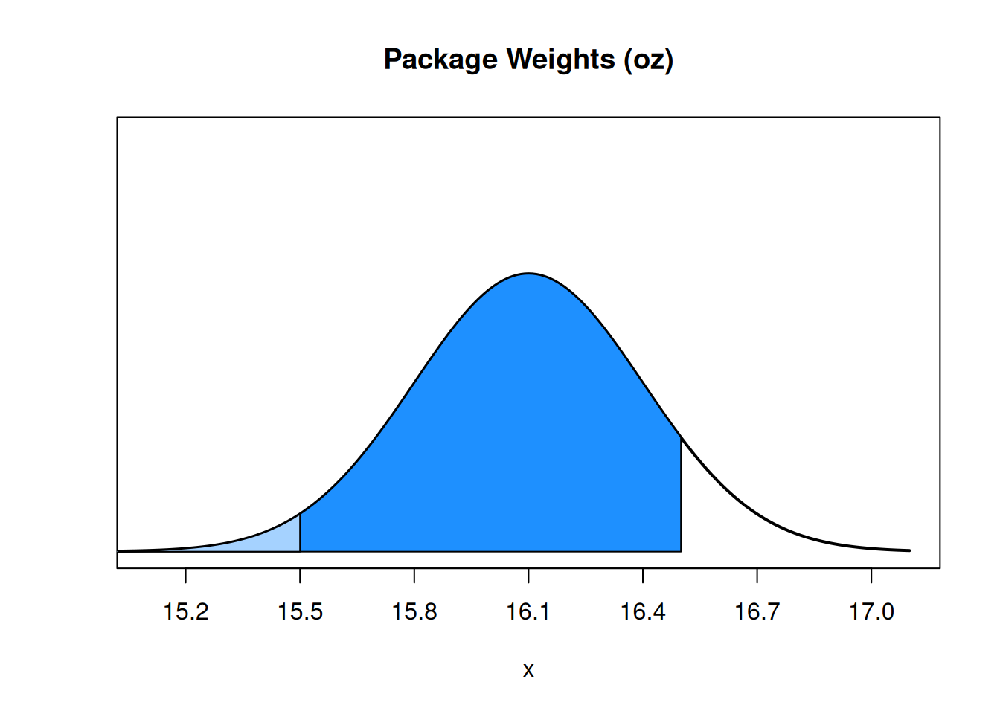
We need \(P(W \le 16.5) - P(W \le 15.5)\) or in standardized scores, \(P(Z \le \frac{4}{3}) - P(Z \le -2)\). About 88.6% of packages are in this range.
## [1] 0.8860386## [1] 0.8860386To accompany our discussion of normal probability, we should also discuss normal quantiles. We’ve seen the concept of a quantile in the context of data, but it has the same definition for a population. For example, the 80th percentile on a normal distribution is the point such that 80% of the area (80% of the population) is below that point.
In R, normal quantiles are found with the qnorm function (quantile normal). This is the “opposite” of pnorm. We use qnorm when we are given a percentage or area, and want to know what value corresponds to that percentile.

For example, qnorm(0.4) finds the 40th percentile of a standard normal curve.
## [1] -0.2533471We can compare this functionality to pnorm, which we use if we are given an x value and need to find the area below that x value.

Let’s go back to the package weights that are normal with mean 16.1 oz and standard deviation 0.3 oz. \(W \sim N(16.1, 0.3^2)\).
- Above what weight is the heaviest 1% of packages?
Having 1% of the packages be above a certain weight means that 99% of weights are below, so this is asking us to find the 99th percentile. We can do this directly with the qnorm function by specifying the mean and sd.
## [1] 16.7979We can also think about this in terms of z-scores. If a z-score is given by \(z = \frac{x-\mu}{\sigma}\), then we can re-arrange this to get \(x = z \sigma + \mu\). This expression lets us convert a value from Z to a value on another normal curve. We can do this with the 99th percentile of z to get the 99th percentile of \(W\).
## [1] 16.7979We see that 99% of packages are below 16.798 ounces (and so 1% are above).
- What package weight is the 3rd quartile?
The 3rd quartile is the “three quarters” point of our population, the value such that 75% of the population is below and 25% is above. This is the same as the 75th percentile, so we can use the same method as before to find this value. We see that 75% of packages are less than 16.302 ounces.
## [1] 16.30235## [1] 16.30235- Here’s a recap of material from earlier in this section. Suppose ten packages are randomly selected off the production line. What is the probability that exactly 6 packages have weights above 16 ounces?
Checking whether or not a weight is above 16 ounces is a yes/no outcome, the packages are independent, and because the packages are all sampled from the same weight distribution, each has equal probability to exceed the threshold. These criteria (binary, independent, identical) are exactly what we need to define a binomial RV.
If \(X\) is the number of packages above 16 oz in the sample of ten, then \(X\) is binomial with \(n = 10\) trials. The success probability \(\pi\) is the probability that any individual packages is above 16 ounces, which we can get with pnorm. The default behavior is to give an area below (in the lower tail), but we want an area above (in the upper tail). We can do this with subtraction, or by specifying lower.tail = F.
## [1] 0.6305587## [1] 0.6305587
Any individual package has a probability 0.631 of being over 16 ounces, so the count of how many packages out of 6 are greater than 16 oz is \(X \sim Binom(10, 0.631)\). We can use R dbinom to get our final probability, which is \(P(X = 6) = 0.246.\)
## [1] 0.2457542